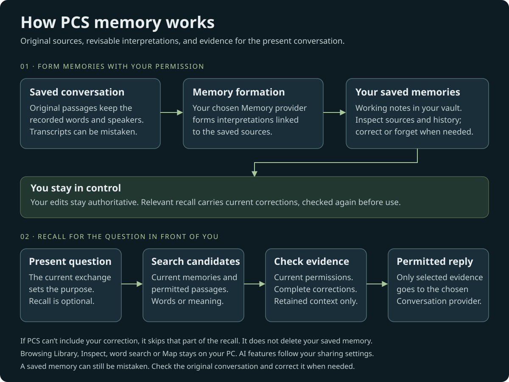
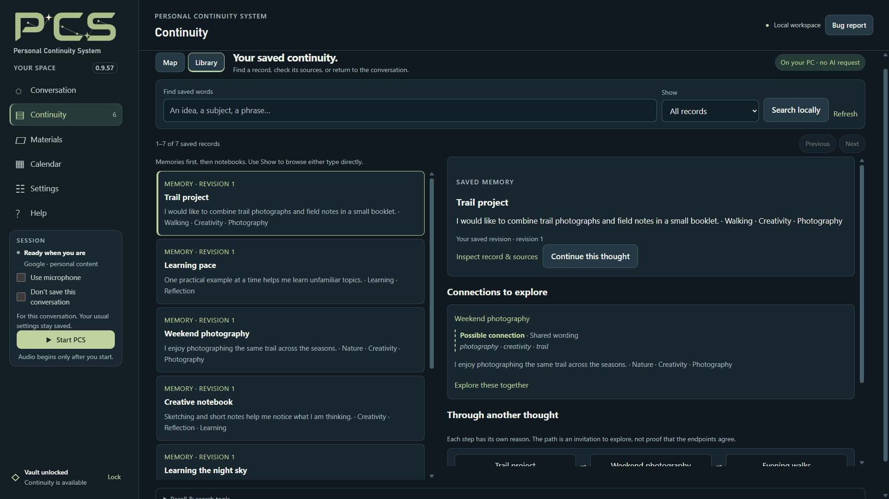

From a conversation to useful context
With saving and learning enabled, PCS retains original conversation passages and uses the selected memory model to form source-linked interpretations. Saving the original and forming a memory are separate steps. A retained passage can exist before a useful memory has been formed.


Your corrections remain distinct from earlier interpretations. Automatic memory formation preserves owner corrections, and recall keeps required current corrections with the evidence they qualify. If that combination cannot fit or is no longer current, PCS can withhold it.
Inspect a memory and correct it
- Open Continuity → Library and select a memory.
- Read its original sources and revision history. Distinguish what you said from the interpretation made from it.
- Choose Correct this memory in your own words, then Incorrect, Changed, Applies in a specific context, or Forget.
- Enter your wording and choose Preview change. Review the effects before saving; Forget reviews dependent saved work.


After an uncertain plain-language save, choose Review latest saved revision, compare it with your retained wording, then preview again. Advanced JSON has its separate Review latest saved memory action. Reviewing does not save either draft, and unfinished text in the other editor stays intact.
PCS records whether the owner or a model wrote each account; editable text cannot replace that attribution. Applicability wording explains context, not an access or spoiler filter. A correction cannot erase text already delivered to a conversation model; use a fresh conversation to continue without that earlier context.
The Continuity Map offers another route into the records. Follow a connection, inspect its support, and review a draft to bring selected records into Conversation.
Choose what recall can use
Open Settings → Memory & sharing → Personal memory & practice. Read the learning and original-source choices saved for your selected connection. Recall returns selected evidence within your permissions and the model’s context limits; it does not send the whole vault.
Your continuity is separate from the model. Changing a supported provider leaves saved originals, memories, corrections and notebooks in the same vault. The next model can work with permitted evidence from those records; it may interpret or recall them differently. Learn about switching connections.
Find references in saved conversation passages can recover details that never became a memory. This needs permission to share originals. Search by meaning can complement word search; the optional Local Nomic search model runs on CPU without cloud embeddings.
Recall can miss a detail, select an imperfect match or choose no callback. Inspect important evidence and correct mistakes. An earlier experience does not prove what you think or need now.
Choose memories for the current activity
Open Activity in the Conversation toolbar to describe a book, game, film, series or real-life situation. Add progress and the kind of help you want. Optional Automatically follow my current activity uses your current words; it does not grant permission to share saved accounts. You can still set details manually.
For a spoiler-limited story activity, choose Choose memories for this activity while stopped. Review the complete current accounts and required corrections before approving. Saved approvals belong to the exact activity and account revisions you reviewed. Changed accounts or activity settings require review again. No approval means no saved memory is supplied for that scope.
Automatic following waits for current activity classification before supplying saved memory. A later activity or progress change applies to saved-memory context in a fresh conversation: use Use for next conversation, Stop, then Start. If unidentified speech overlaps typing, PCS explains that automatic voice following is paused for that conversation; use typing on a supported route or start a fresh conversation to resume it.
Enabled public research stays available. Ordinary questions about controls, DLC, hardware or unrelated topics need no extra activity approval or conversation restart, including while automatic following is waiting or pending. Title, edition and known progress guide relevant story answers; PCS is instructed to ask before revealing later events unless you request them. Spoiler avoidance is best effort. Public research does not grant access to saved memories.
These controls restrict saved-memory disclosure. Model knowledge and what you say can still contain spoilers, and an approval cannot erase earlier context. Why this? Inspect memory context shows recent memory handoffs with record references; it does not prove which memory caused every answer.
Explore another perspective
Choose a question and up to six saved memories, then review the model and sharing choice before requesting a reflection. Your complete selection stays visible across searches, with Inspect and removal controls. This is separate from activity-memory approval.
The result offers neutral questions, with complete supplied accounts available for inspection. Choose Save this question only if you want to retain it with its model attribution and evidence references. A saved question is not a fact about you. Question relevance remains experimental, and missing memories do not establish a blind spot.
Check saving separately from memory formation
Saving & memory health shows pending work and problems. A reply that says “saved” is not a storage receipt; check PCS’s save result and the record. Local memory processing can work through large originals in smaller sections and wait for quiet conversation periods.
If Saving needs recovery appears, keep PCS open. Choose Recover saving and enter this vault’s passphrase. PCS checks confirmed writes and retries retained text without starting a provider request. Wait for saving to settle before quitting.
Saving, clearing and forgetting
- Don’t save this conversation pauses new PCS saving. Earlier saved records remain. Cloud providers still receive an active cloud conversation.
- Clear chat clears the displayed chat. Hiding the memory stream only hides that panel; neither deletes saved continuity or stops learning.
- Forgetting or deleting changes the selected saved records. It cannot retract content already sent to a provider or remove copies in earlier backups.
Keep a restorable copy
While stopped and unlocked, use Settings → Privacy & maintenance → Backup & restore → Save current backup…. Wait for confirmation and keep the passphrase. Original Materials files need a separate copy; readable exports are not encrypted vault backups.
Keep a pre-upgrade backup and verify a restored copy in an empty installation. See upgrade steps and storage and sharing boundaries.